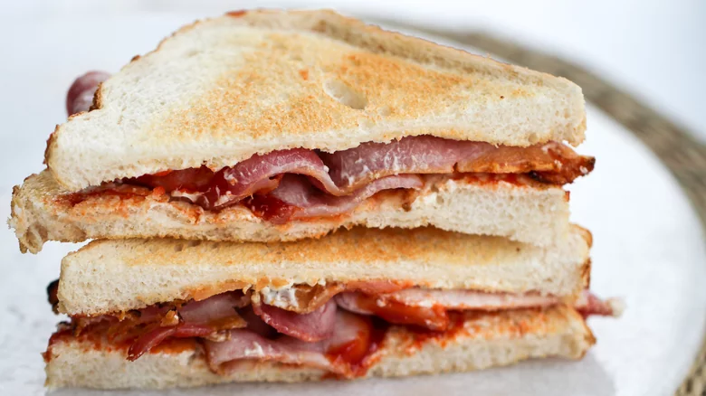

Bacon Butty

The Great British Bacon Butty
University researchers has finally found the perfect bacon butty.
Ingredients
- 3 rashers bacon per butty, minimum
- 2 slices of bread (farmhouse is ideal) or a crusty roll
- Heinz ketchup (or brown sauce, if you're that way inclined)
- Butter (optional)
Method
- Cook the bacon under a preheated oven grill for seven minutes at about 240C/475F - turning half way through the cooking time.
- Cook until crispy, but not burnt or too dry.
- Butter the two slices of bread (I like to toast mine a little) and place the grilled or fried bacon inside the two slices of bread to make a sandwich.
- Add sauce to taste.
- Enjoy your beautiful butty! (Pairs perfectly with a strong cup of Yorkshire Tea)